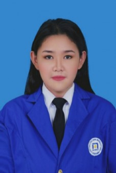

Home
|
Download CV
|
Contact
|
About me

Fauzia Dhiyaa' Farros
(Web Developer)
Overview
Hi, saya adalah calon web developer masa depan, saat ini sedang belajar HTML 5.
Skill
Pengalaman
Membuat Web Form
Membuat Website Tugas Akhir UTS
Membuat Biodata HTML
Semantic Element
Membuat Website Statis
Mengikuti BTNG DNCC 2020
Mengikuti Webinar Data Science Indonesia 2020 (Chapter Yogyakarta)
Mengikuti Webinar Mobile App Developers 2020 (Tokopedia)
Mengikuti Webinar Konfrensi Big Data Indonesia 2020 (Universitas Syiah Kuala)